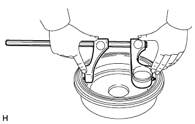
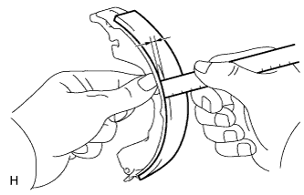
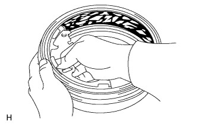

PHANH SAU > KIỂM TRA |
| 1. KIỂM TRA ĐƯỜNG KÍNH TRONG TRỐNG PHANH |
|  |
Dùng đồng dụng cụ đo trống phanh hay tương đương, hãy đo đường kính trong của trống phanh.
| 2. KIỂM TRA ĐỘ DÀY PHẦN MA SÁT CỦA GUỐC PHANH |
|  |
Dùng một thước, đo độ dày của má phanh.
| 3. KIỂM TRA SỰ TIẾP XÚC ĐÚNG CỦA TRỐNG PHANH VÀ MÁ PHANH |
|  |
Bôi phấn lên mặt trong của trống phanh. Sau đó mài lên mặt ma sát của trống phanh cho đến khi đạt được tiếp xúc hoàn toàn.
Nếu trống phanh và má phanh không tiếp xúc hoàn toàn, hãy dùng máy mài guốc phanh hoặc thay thế guốc phanh.
Sau khi kiểm tra, lau sạch phấn trên mặt trong của trống phanh và bề mặt ma sát.
| 4. KIỂM TRA CỤM XI LANH PHANH BÁNH SAU |
Kiểm tra xi lanh và píttông xem có bị gỉ hoặc bị xước không.
Nếu cần thiết, hãy thay thế xi lanh và píttông.